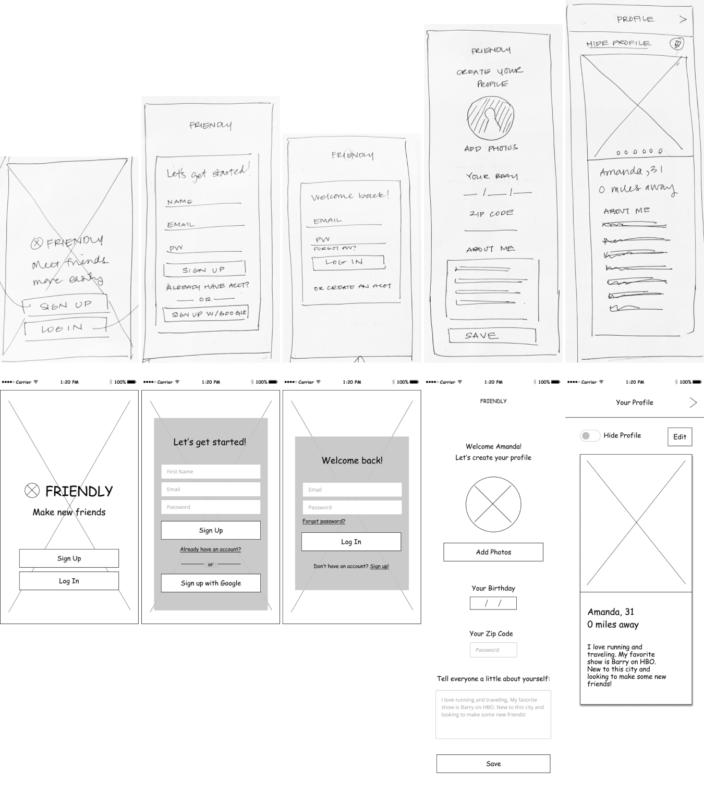
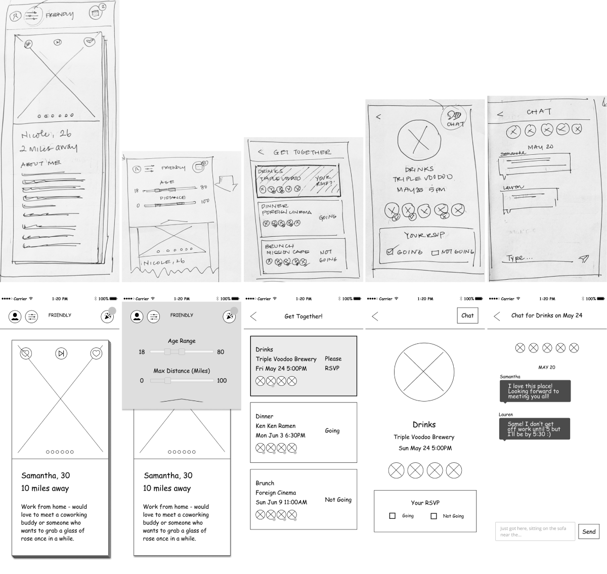
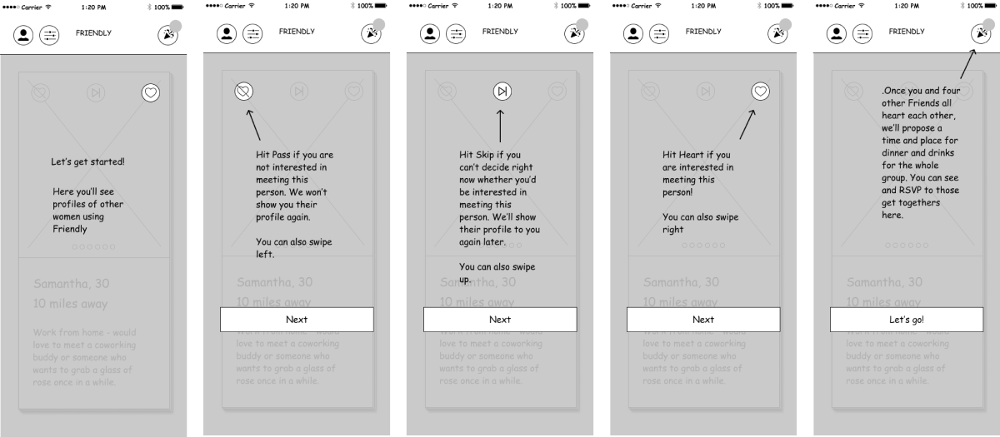
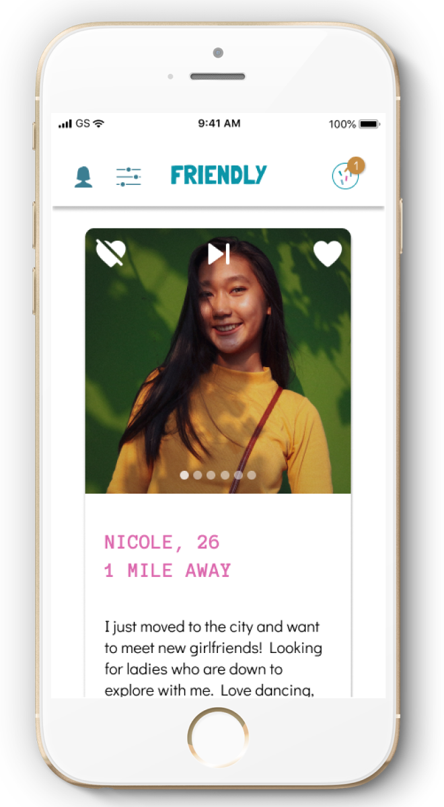
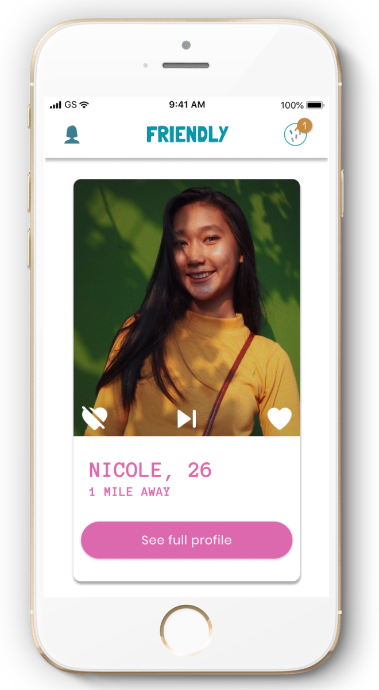

Making new friends can be hard, especially as a busy adult. Friendly makes it easier.
See PrototypeUX / UI Designer
user research, user testing, sketching, wireframes, branding, visual design, prototyping
Figma, InVision
2 weeks
Most existing apps for meeting new people don't set their users up for success. The process can be intimidating and coordinating plans is always hard, especially between strangers.
Friendly brings together small groups of people who mutually want to meet up and offers suggestions for the first get together You control who you meet and we do the coordination.
Friendly is an independent project that I concepted and designed for the UX / UI design program Bloc. The challenge of making friends as adults has always been an interesting one to me - many people consider it to be a struggle. Especially in cities and through life stages, people are transient and it’s hard to remake those lost connections.
Apps do exist for meeting new people, but they seem to range from two extremes: either huge, impersonal Meetup groups or one-on-one Tinder-style apps. These models leave a lot to luck and effort. I wanted to get to the bottom of how the average person actually wants to meet new people, and how to create a situation that makes it easy and comfortable to do so.
First, I had to validate that my theory was true - that there is a gap in the market between Meetup- and Tinder-style apps.
Meetup is one of the more popular apps for meeting people - 44 million members use it to attend events hosted by interest-based or professional organizations. When someone attends a Meetup event, they are betting on the fact that they will connect with someone based on a common interest. The downside is that they don’t really know anything else about anyone attending the event beforehand - user profiles are sparse to non-existent.
Dating-style apps have also emerged to help women make friends, such as Hey Vina! and Bumble BFF. Like on dating apps, the user can swipe left or right on other users’ profiles - if they “match” with another user, they can chat to arrange a meeting. While this offers a more personal approach to making friends than Meetup, the one-on-one interaction can be high pressure. Plus, it’s still a lot of work to get together with even one person you meet through the app - chats trail off and never get picked up again, and coordinating an actual time and place is a burden.
See Full AnalysisLots of members, you can just show up to events
Groups can be very big, can't vet users attending events
More personal, can review users individually
Need to coordinate meetings, hard to keep chat threads alive
More personal, has some hosted events
Can't vet other attendees of hosted events
92% of respondents prefer to meet new people in small groups- on average respondents prefer a size of about 5 people. Only 8% of people wanted to meet new friends one-on-one and no respondents are comfortable meeting new friends in larger group settings.
83% of respondents would like to have a meal when meeting someone for the first time, and 75% of respondents would also like getting drinks (happy hour, etc)
Pre-planned events is a popular feature with people who have used similar apps before, since they require no work to set up.
Location is the primary driver for whether someone would meet up with a potential online match.
Our target demographic are women in urban areas using iOS (83% of respondents) between the ages of 26 - 35.
Based on this research, we believe a good design will allow for the ability to review profiles, filter by location, and meet people in small group settings for dinner or drinks. In addition, the event would be suggested by the app - no work on the user’s end.
Nicole (26) is new to town. Her goal is to meet people in her new city and build a community around her.
Lauren (31) is a local, busy professional. Many of her friends have moved away, so she is looking to make new connections but in the most efficient way possible.
Samantha (30) is a shy freelancer. She wants to get out of her house and socialize, but needs to do it in a setting that isn’t intimidating.
Wireframes were built for every screen detailed in our priority user flows.
Prior to Friendly, I had worked on a desktop project, so wireframing Friendly was an exercise in thoughtfully choosing mobile first designs - everything from the home screen layout to using checkboxes (or rather, no checkboxes).
 At this point I realized a new user might not be able to make sense of the app without more context, so I also added an onboarding flow.
 See More WireframesFun, playful and warm were guiding principles for our branding.
Our logo uses the playful Londrina Solid typeface which lightens the mood on sight. The logo mark we landed on is five rectangular shapes scattered together: these represent the five friends that our app groups together for dinner and also has a festive feel of confetti.
Along with Londrina Solid, we also have a contrasting typeface used for most header text: Anonymous Pro. This typewriter-style font balances the chunky, rounded type of our logo and lends its own unique flair. Finally, Didact Pro serves as our body text: a simple sans-serif for readability, with a slightly handwritten quality for subtle whimsy.
HEADER 1
Londrina Solid
Header 2
Anonymous Pro Bold
Body
Didact Gothic
Body Link
Didact Gothic
Our color palette reflects our brand principles with punchy pink and lively turquoise. A warm amber is included as an accent too - we want our users not only to be excited to make new friendships, but also to feel safe and comfortable doing so in our intimate group settings. These colors evoke a sense of play and warmth.
Using this branding, we created our first round of mockups. This was an exercise in figuring out how to best marry our branding with the structural design of the app. Some things I thought would work didn’t work - for example, putting our colorful logo on top of a similarly colorful hero image on our homepage. Also - how do you employ a palette of five fun and funky colors without it looking like a chaotic mess?
It all worked in the end. I traded off my colorful hero image to keep the (more important) colorful logo. And as it turns out, a healthy dose of white for the app background color keeps the lively color palette from feeling chaotic.
A clickable prototype was set up in InVision. We had three participants test this prototype by attempting to complete five tasks (i.e. our priority user flows):
All participants found the app to be straightforward and the tasks to be easy. On the scale of 1 (easy) - 10 (difficult), all tasks were reported to be less than 3 in difficulty.
However, there were some critical design problems that were raised during testing, which we incorporated into the revisions described below.
Our initial design paired a swipe interaction with long, scrollable profiles as well as photo carousels. Users rightfully questioned whether they would be able to scroll through photos without accidentally swiping left on a friend.
Users liked the swipe interaction though, because it was a familiar one from dating apps and made the app “more fun” - so we couldn’t simply remove the swipe interaction. However, this meant that we could only have a user profile that fit within the viewport - that is, a very short profile.
To solve for this, we truncated the profile in the feed, but added a button to view the full profile on another (un-swipeable) screen, if desired.
Placeholder
Corrected swipe conflict
There was some confusion with our filters, which were designed as sliders - a user could slide to indicate the age range or distance of people they’d like to meet. One participant was confused about the meaning of the slider labels and another participant misread them. Upon further reading, I learned that sliders are not the best UI element for selecting precise numbers, especially not for mobile. Instead, I replaced the sliders with number inputs.
This project is dear to me because I believe it solves a real need that many adults have today. Not only does this app facilitate more comfortable environments for making friends, it helps you do so more easily. Many of the things we designed tested well, such as matching with “groups” rather than individuals, but you still get to swipe through individual profiles (more control and fun!)
I had expected there to be more variance in how people like to meet new people - the size of the group, the types of activities, etc. But most people actually like the same things. This made it even more straightforward how our app could be designed to facilitate ideal friend-making situations for our users.
Lastly, this project was a great exercise in designing a mobile app:
These were challenges I hadn’t anticipated before the project, but I’m glad I learned and can take into future mobile projects.